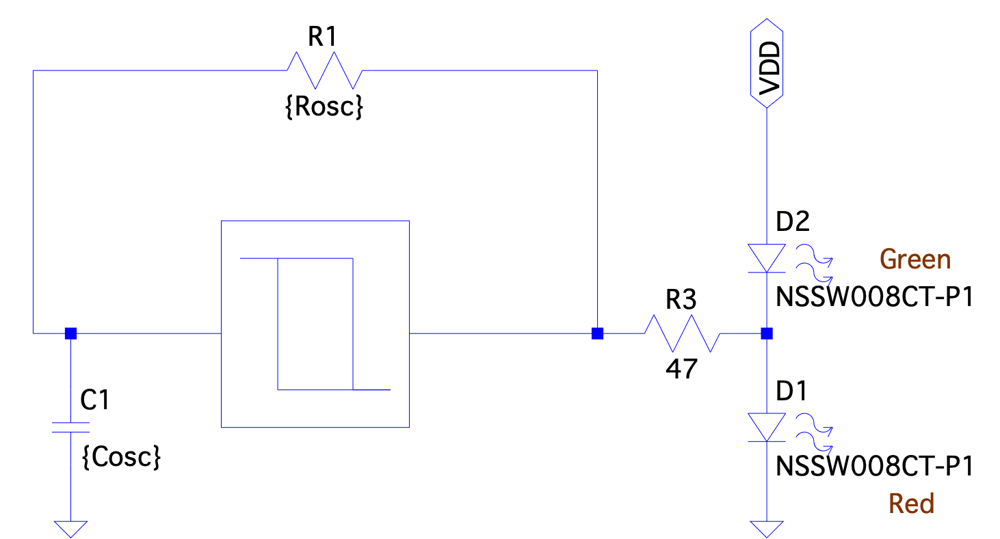
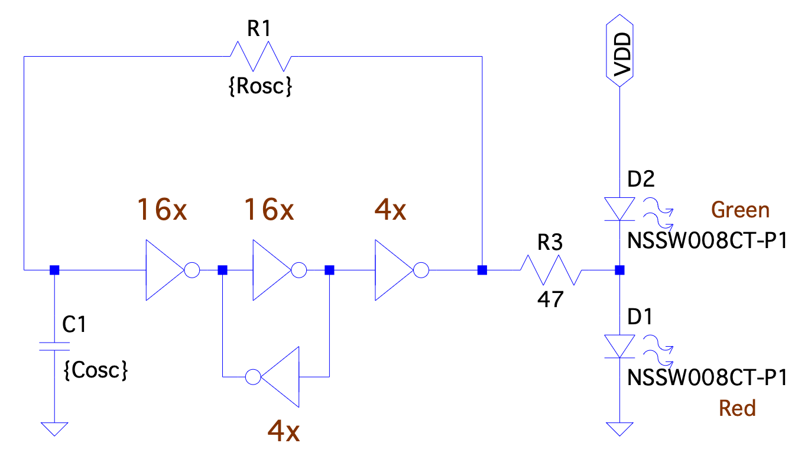
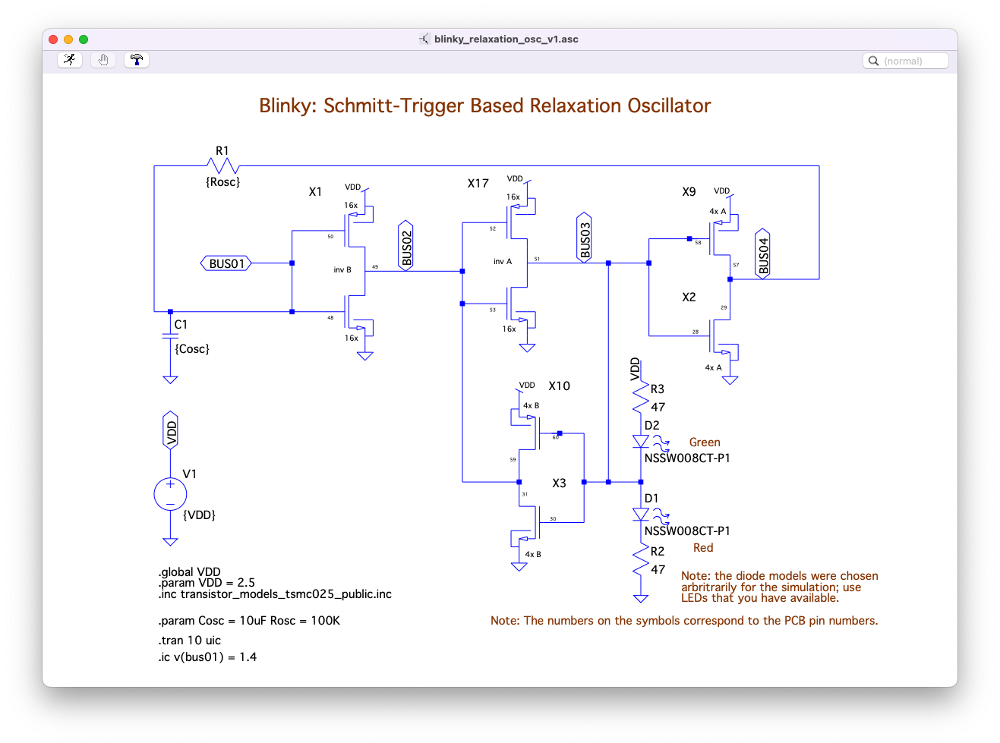
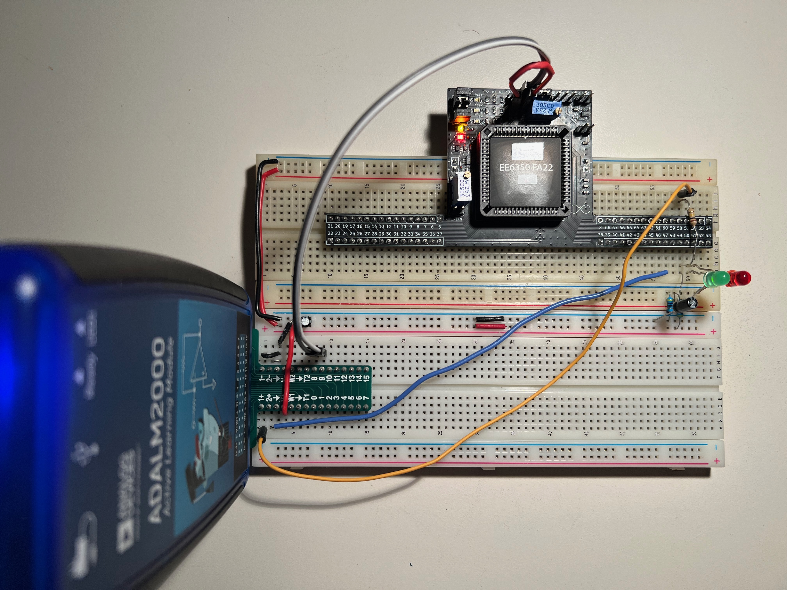
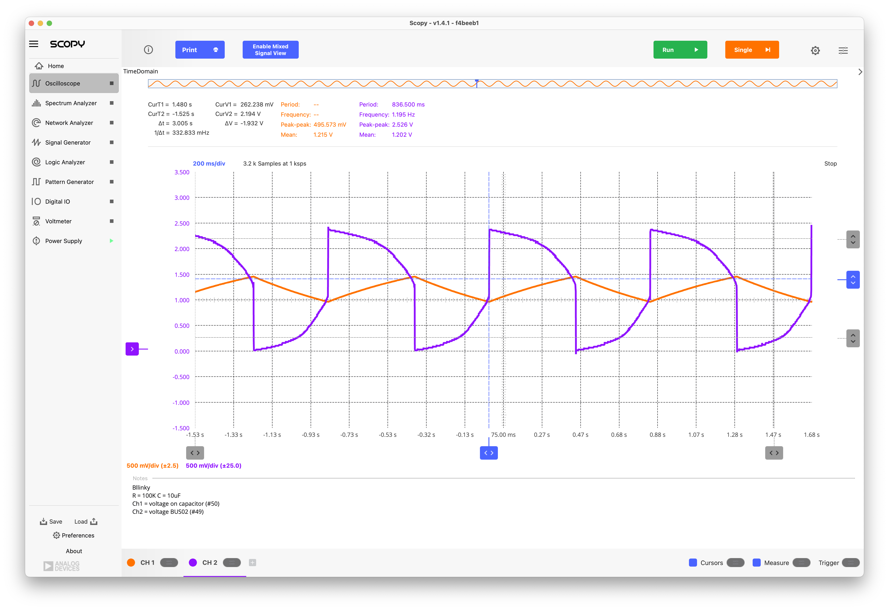
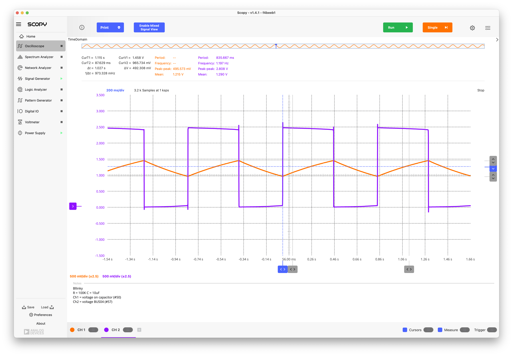
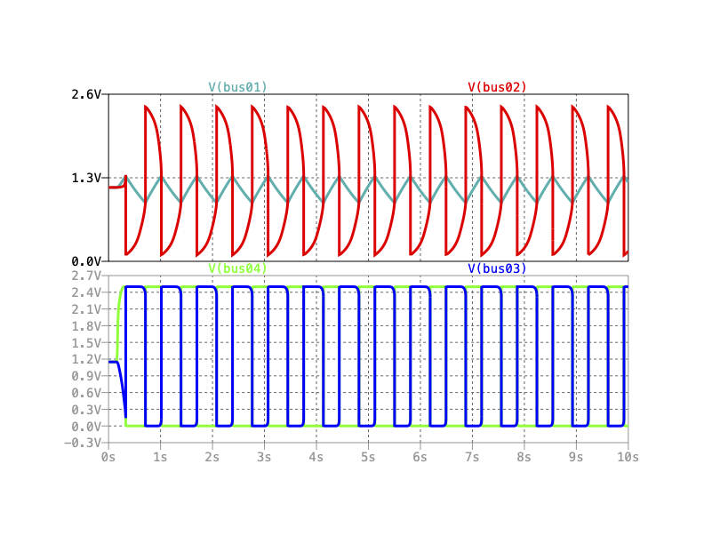
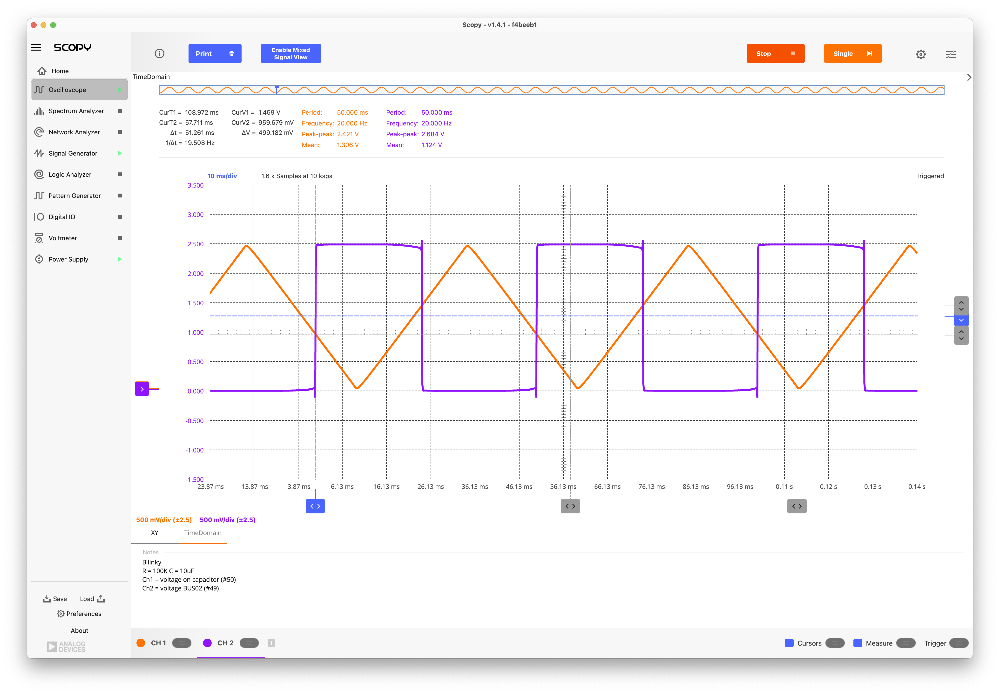
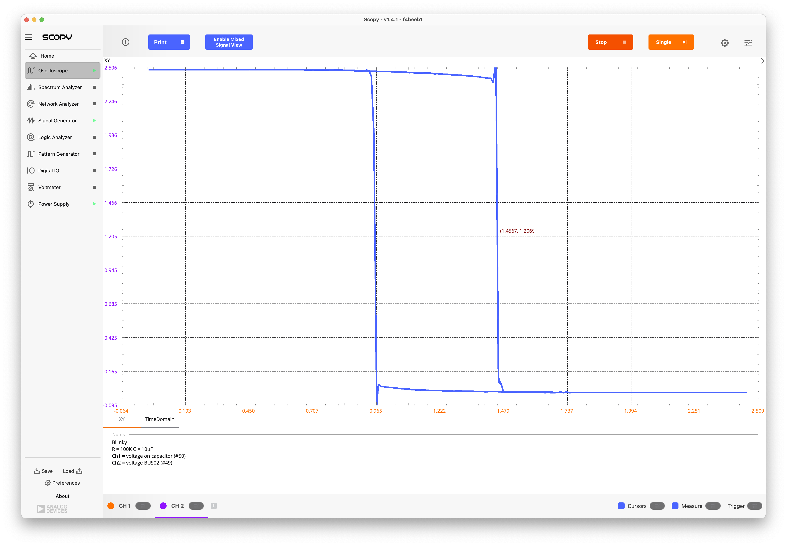

2.1. First Experiment: Blinky#
As a first experiment we show a Schmitt-Trigger Relaxation Oscillator with LEDs. It’s always good to start off a project with blinking LEDs …
2.1.1. Schmitt-Trigger Relaxation Oscillator#
The ‘Blinky’ circuit is built using a Schmitt-Trigger relaxation oscillator as shown below.


Fig. 2.1 Block diagram of the blinky circuit#
Circuit Schematic: We build the Schmitt Trigger out of cascade of a 16x, 16x and 4x inverter with a 4x inverter providing positive feedback around the second stage, resulting in hysteresis in the input-output transfer characteristic. Overall feedback around the Schmitt Trigger is created with an R-C network. LEDs are connected at the output of the second stage; the red LED ligths up when the output is high, and the green LED lights up when it is low.


Fig. 2.2 Implementation of the Schmitt Trigger for the blinky circuit using inverters#

Fig. 2.3 LTSpice schematic for the MOSbius realization of the blinky circuit#
Building the Circuit with MOSbius: You can use manual connections or use the on-chip switch matrix (Files: bitstream, bitsteam_clk, connections). When using the on-chip connections, the solderless breadboard only requires and external resistor and capacitor, along with the LEDS.

Fig. 2.4 Photo of the blinky setup using the on-chip connections; the external components are a 100K\(\Omega\) resistor, a 10uF capacitor, and two LEDs with 47\(\Omega\) resistors; the orange and blue wires connect to the ADALM2000 oscillscope channels 1+ and 2+ respectively; 1- and 2- are grounded; the ADALM V+ provides the 2.5V power supply; digital channels DIO8 and DIO9 are used to feed the bitstream to the CLK and DATA pin of the MOSbius chip to program the switch matrix.#
Tip
A step-by-step guide to learn how to program the MOSbius chip is provided in Programming the Chip Using the MOSbiusTools
Measurements: Besides the blinking LEDs the following waveforms can be observed:

Fig. 2.5 Measured waveforms on BUS01 and BUS02.#

Fig. 2.6 Measured waveforms on BUS01 and BUS04.#
Quick Analytical Estimations: The oscillation across the capacitor has an amplitude of approx. 500mVpp. The average charging current is roughly \(I_{ch} = (V_{DD} - V(\mathrm{BUS01})_{avg})/R = C \frac{\Delta V}{\Delta T}\), so \(\Delta T = R C \frac{\Delta V}{(V_{DD} - V(\mathrm{BUS01})_{avg})}\); using \(V_{DD}\) = 2.5V, \(V(\mathrm{BUS01})_{avg}\) = 1.25, and \(\Delta V\) = 500mV, we obtain \(\Delta T\) = 400ms which corresponds to half the period. This is close to the measured result of 445ms[1].
Comparison to Simulations: The measured results correspond qualitatively very well to the results obtained from an LTspice simulation using models[2] for the chip components:

Fig. 2.7 Simulation results for the relaxation oscillator obtained with LTSpice#
2.1.2. Schmitt-Trigger Transfer Characteristic#
After removing the resistor, BUS01 can be driven with a slow 2.5Vpp sawtooth waveform with a 1.25V DC offset to measure the DC transfer characteristic of the Schmitt Trigger:

Fig. 2.8 Time domain waveforms to create the Schmitt Trigger characteristic between BUS01 and BUS04#

Fig. 2.9 Schmitt Trigger characteristic between BUS01 and BUS04 using X-Y plotting#
The Schmitt trigger has a inverting characteristic with a hysteresis of approx. 500mV centered at about 1.25V.